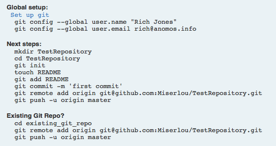
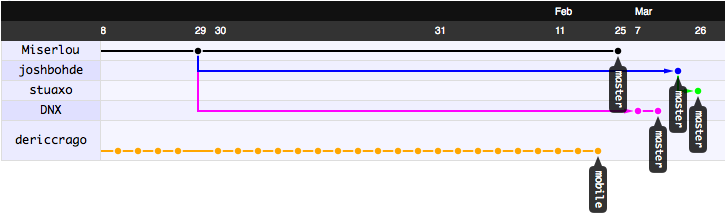
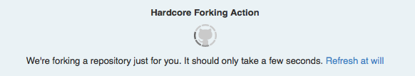
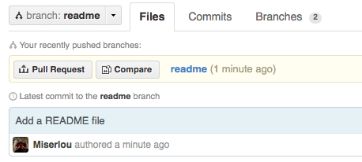
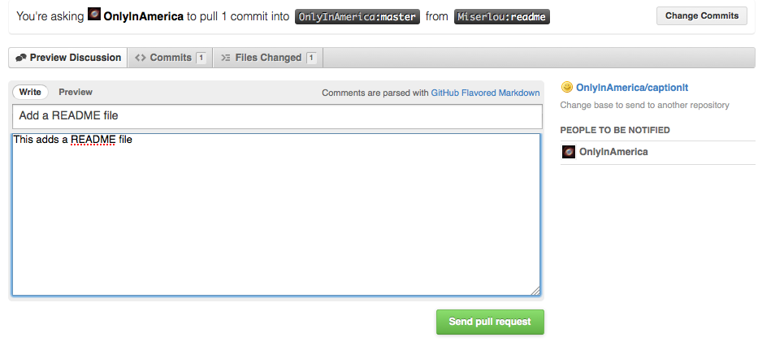

Это руководство научит вас правильно отправлять свои доработки в проекты с открытым исходным кодом, размещенные на GitHub. Предполагается, что вы уже немного умеете пользоваться контролем версий в Git для и у вас имеется аккаунт на GitHUb.
Начало
В GitHub сделаны прекрасные советы начинающим пользователям, которые создают свои новые репозитарии, однако эти советы не очень то полезны, когда речь заходит о внесении изменений в другие проекты. Данное руководство должно помочь в решении этих вопросов.

GitHub показывает эти команды когда вы начинаете новый проект.
Перед тем как начать, следует найти страницу того проекта, который хотелось бы улучшить. Надо обратить внимание на код, решить, подходит ли вам стиль кодирования, принятый в проекте, посмотреть лог коммитов чтобы увидеть кто делает доработки кода, проверить профили ключевых разработчиков.
Просмотр сетевого графа
Первым делом надо зайти на вкладку Network, чтобы посмотреть, какие изменения проекта делают другие люди. Потратьте несколько минут чтобы покопаться в этом графике, поскольку может оказаться, что кто-то уже работает над проблемой, которую вы хотели решить. Вы так же получите представление об активности разработчиков в данном проекте и о том, как будут приниматься изменения в коде.

Пример сетевого графа.
В нем видно, что кто-то уже работает над мобильной веткой приложения,
так что, возможно, нет смысла дублировать данную работу.
Создание проблемы
Далее необходимо открыть вкладку Issues (Проблемы). Посмотрите, что там есть, насколько много скопилось проблем, и выберите ту, над которой вам интересно было бы поработать.
У тебя проблемы, чувак!
Это очень важный шаг, которые многие люди пропускают, и в результате отправляют изменения сопровождающему без учета того, какие изменения действительно нужны в разрабатываемом программном обеспечении. Это наиболее актуально при изменениях пользовательского интерфейса или дизайна, так как для многих людей эти вещи являются самыми важными, и всякие несогласованные изменения будут приниматься в штыки.
Если вашей проблемы еще не существует в списке проблем, смело её создавайте. При создании описания проблемы пользуйтесь общепринятыми правилами общения с людьми: будьте дружелюбны, будьте вежливы, скажите спасибо за создание проекта, опишите ошибку или функцию, над которой вы хотели бы поработать, а затем предложите свою помощь.
Далее можно надеяться на то, что разработчики проекта ответят вам и поделятся своими соображениями о том, как решить проблему.
Сделайте свой форк

Создание отдельного форка
Начинается самое интересное! Нажмите Fork, и вы получите личную версию проекта. В верхней части страницы будет находиться поле, в котором будет показан URL вашего нового репозитария с проектом. В нем можно выбрать либо формат URL-ла по протоколу SSH, либо формат Git.
Имея данный URL, на локально й машине следует дать команду:
git clone **ваш ssh/git url**
Прекрасно! Теперь у вас есть код на локальной машине, с которым можно работать.
Настройка форка так, чтобы он отслеживал оригинальный репозитарий
Это вилка (fork)! Тык, тык, тык!
Следующий шаг не является чем-то абсолютно необходимым, но он очень полезен, если вы планируете работать с проектом достаточно долгое время, а не делать единичное исправление. Используйте следующие команды, чтобы добавить основную ветку оригинального проекта (upsteam) как удаленную ветку, из которой вы будете заливать изменения основного проекта в вашу ветку. Замените значения upstreamname и projectname на те, которые используются в ваших репозитариях.
git remote add --track master upstream git://github.com/upstreamname/projectname.git
Эта команда добавит оригинальный проект как удаленный с именем upsteam. Для получения кода, введите:
git fetch upstream
Затем, чтобы сделать слияние со своим собственным кодом, введите:
git merge upstream/master
Теперь у вас будет актуальная версия оригинального вышестоящего кода в вашей текущей ветке.
Доделать перевод...
Setting Up A Development Branch
Guys, remember the old internet? Oh man.
Now you're getting ready to start hacking, you'll want to switch off of the 'master' branch and onto a different branch for your new feature. It's important to do this because you can only have one Pull Request per branch, so if you want to submit more than one fix, you'll need to have multiple branches. Make a new branch like this:
git branch newfeature
Then switch to it like this:
git checkout newfeature
Now you're on your new branch. You can confirm this by simply typing 'git branch'.
This part's up to you. Hack along as you normally would until the code is in the state where you're happy with it, it performs the task as described and it passes all the tests you've written for it. Yayyyy!
Squash. Hur hur hur.
If you're a heavy committer like me, you've probably got lots of poorly messaged commits ('works!', 'broken', 'fuck', 'woo', etc.). This is a bad habit, but I haven't been able to break it yet and I know I'm not the only one!
Before you submit your pull request back upstream, you'll want to squash these commits into a small handful of well-labeled commits. To do this, we're going to use the git rebase command. First, take a look at the commits we've made with git log and figure out the commits that we want to squash. If we wanted to squash the last 3 commits into one, we'd open up an an interactive rebase like this:
git rebase -i HEAD~3
This will bring you into your editor with some text that will look something like this:
pick df94881 Allow install to SD
pick a7323e5 README Junkyism
pick 3ead26f rm classpath from git
To squash those commits into one, change to something like this:
pick df94881 Allow install to SD
squash a7323e5 README Junkyism
squash 3ead26f rm classpath from git
Then, save/quit, and you'll be brought to into another editor session. Describe the changes as well as you can and save/quit again. Hooray! You've squashed your ugly commits into one nice one. Now you're ready to submit a pull request.
Once you've commited and squashed your changes, push them to your remote like this:
git push origin newfeature
Then go to that page on GitHub and change branches to the one for your new feature.

Submit a Pull Request!
Then, click on the little button that says 'Pull Request'. This will bring you to a page asking you to describe your change. Describe it thoroughly.

Describe your Pull Request.
Then press 'Submit Pull Request'. Hooray! You did it. Now, you're not quite done yet. If the maintainer finds some problems with your code, they won't want to pull your changes until you fix them. Fortunately, whenever you commit and push more things to that branch of your code, they will be included in that pull request until it is closed.
Bonus! If you're on the receiving end of a pull request, how do you merge the changes? Easy - press the button! GitHub now has an auto-merge button which does everything for you in one click. However, it doesn't always work, in which case you'll have to do the merge on your own machine, like so:
git checkout master
git remote add contributor git://github.com/contributor/project
git fetch contributor
git merge contributor/newfeature
git push origin master
And then their changes will be properly merged into your main master branch.
Some forks are unavoidable.
Sometimes, for technical or organizational reasons, your pull request will be rejected. This can feel really frustrating, and there are a few different ways you can proceed. Just remember to act rationally.
The simplest thing is to simply accept their judgement. It's their project, and a good maintainer knows when to say "no." If their argument is logically sound, you should accept it. If you don't think it's a particularly important feature, hopefully whoever is looking at the project will check the Network and Issues tabs of the upstream project and will notice your changes. However, I think this is a pretty poor solution in cases when the upstream maintainer is wrong or unresponsive.
A better thing to do is write about it. Write about it on your blog, start a discussion on a mailing list, and solicit opinions from the community about what the best way to proceed is. If you don't have a destination to share on yet, then take the initiative to start a blog and make this your first post. It'll also give some Google-juice to your project/issue, which will help other people who ran into the same problem you faced.
The last option is to sever ties with the upstream and declare yourself the new maintainer of the project. This should only be as a last resort and should only really be done when the upstream project is dead or has gone completely off the rails. That being said, this kind of software deadheading can actually breathe a lot of new life into a project - just look at how LibreOffice has managed to revive the OpenOffice project by severing ties with Oracle.
If you do this, you should rename your project to differentiate it from the upstream, explicitly state your reasons for the schism in your README, and be sure to give proper copyright credit according the the open source license they originally chose. Maintaining an open source project carries quite a lot of responsibility, so make sure you're prepared to care for the project once you create such a schism.
Hopefully this little guide was useful for getting you started with collaborative software development on GitHub!
If you're a developer looking for more jobs, we at Gun.io would like to help! You can sign up with GitHub and we'll automatically pair you up with freelance and full-time job offers based on your existing code portfolio!